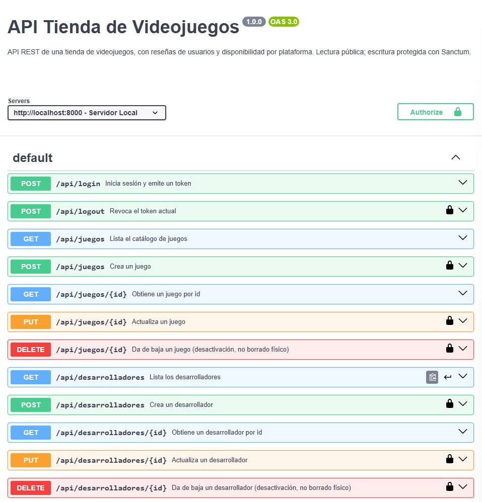

Documentar la API con OpenAPI
Documentar un servicio web es publicar su contrato: qué endpoints existen, qué aceptan, qué devuelven y qué errores producen, de forma que un tercero pueda consumirlo sin leer tu código. El estándar actual es OpenAPI 3 (heredero del proyecto Swagger): un documento YAML o JSON legible por humanos y por máquinas, del que se generan portales interactivos (Swagger UI), clientes automáticos y validadores.
Anatomía de un documento OpenAPI
El contrato de la tienda de videojuegos, pieza a pieza. Primero la identificación, luego el bloque servers para que swagger tenga acceso a nuestra API, y por último un endpoint de lectura:
openapi: 3.0.3
info:
title: API Tienda de Videojuegos
version: 1.0.0
description: >
API REST de una tienda de videojuegos con desarrolladores.
Lectura pública; escritura protegida con Sanctum.
servers:
- url: http://localhost:8000
description: Servidor Local
paths:
/api/juegos:
get:
summary: Lista el catálogo de juegos
parameters:
- name: genero
in: query
required: false
schema: { type: string }
description: Filtra por género (opcional)
- name: page
in: query
required: false
schema: { type: integer }
responses:
'200':
description: Colección paginada de juegos
content:
application/json:
schema:
type: object
properties:
data:
type: array
items: { $ref: '#/components/schemas/Juego' }genero/page son parámetros de consulta (in: query) — van en la URL tras el ?, y por eso required: false en los dos: filtrar o paginar es opcional, no obligatorio.
Cada id en la URL (/api/juegos/{id}) es un parámetro de ruta distinto (in: path, siempre required: true — sin él, no hay recurso al que referirse). Fíjate también en el 404, que aquí sí hace falta documentar porque show() puede no encontrar el recurso:
/api/juegos/{id}:
get:
summary: Obtiene un juego por id
parameters:
- name: id
in: path
required: true
schema: { type: integer }
responses:
'200':
description: Juego encontrado
content:
application/json:
schema:
type: object
properties:
data: { $ref: '#/components/schemas/Juego' }
'404':
description: No existe o está desactivado
content:
application/json:
schema: { $ref: '#/components/schemas/Error' }Después la creación, con su cuerpo de entrada, su seguridad y todos sus códigos:
post:
summary: Crea un juego
security:
- tokenSanctum: []
requestBody:
required: true
content:
application/json:
schema: { $ref: '#/components/schemas/JuegoNuevo' }
responses:
'201':
description: Juego creado
content:
application/json:
schema:
type: object
properties:
data: { $ref: '#/components/schemas/Juego' }
'401': { description: Token ausente o inválido }
'403': { description: Token sin permiso de escritura }
#'422': { description: Datos no válidos }
'422':
description: Datos no válidos
content:
application/json:
schema: { $ref: '#/components/schemas/ErrorValidacion' }El 422 merece una explicación aparte, porque su schema usa una pieza que no has visto hasta ahora: additionalProperties. Dentro de errors, no sabes de antemano qué claves va a haber, ya que depende de en qué campos falle la validación en cada petición concreta (a veces solo titulo, otras titulo y precio a la vez).
En vez de listar cada campo del formulario uno a uno como si fueran fijos, additionalProperties: { type: array, items: { type: string } } dice: “cualquier clave que aparezca aquí, su valor será un array de strings”. Es justo la forma real que ya devuelve Laravel en cualquier 422 ({"titulo": ["El campo titulo es obligatorio."]}), documentada sin tener que enumerar de antemano todos los campos posibles del formulario.
Y por último components: los esquemas reutilizables (fíjate en que Juego describe la respuesta del Resource, no la tabla) y el esquema de seguridad:
components:
securitySchemes:
tokenSanctum:
type: http
scheme: bearer
schemas:
Juego:
type: object
properties:
id: { type: integer, example: 1 }
titulo: { type: string, example: "The Last of Us Part I" }
precio: { type: number, example: 69.99 }
precio_iva: { type: number, example: 84.69 }
genero: { type: string, example: "acción / aventura" }
franja_precio: { type: string, example: "premium" }
desarrollador: { $ref: '#/components/schemas/Desarrollador' }
# Las dos siguientes dependen de la tercera funcionalidad elegida en EJ7
resenas:
type: array
items: { $ref: '#/components/schemas/Resena' }
disponibilidad:
type: array
items: { $ref: '#/components/schemas/PlataformaStock' }
JuegoNuevo:
type: object
required: [titulo, precio, genero]
properties:
titulo: { type: string, example: "Baldur's Gate 3" }
precio: { type: number, example: 59.99 }
genero:
type: string
example: "RPG"
enum: ["acción / aventura", "survival horror", "action RPG", "carreras", "shooter", "mundo abierto", "RPG"]
desarrollador_id:
type: integer
nullable: true
example: 8
Desarrollador:
type: object
properties:
id: { type: integer, example: 1 }
nombre: { type: string, example: "Naughty Dog" }
pais: { type: string, example: "EE. UU." }
juegos:
type: array
items: { $ref: '#/components/schemas/Juego' }
DesarrolladorNuevo: ...
Error:
type: object
properties:
message: { type: string, example: "Recurso no encontrado" }
ErrorValidacion: # En el ejemplo se utiliza para el error 422
type: object
properties:
message: { type: string, example: "El campo titulo es obligatorio." }
errors:
type: object
additionalProperties:
type: array
items: { type: string }
example:
titulo: ["El campo titulo es obligatorio."]Redactar, validar y renderizar
El flujo de trabajo:
Redacta el YAML en editor.swagger.io: la mitad izquierda es el editor, la derecha renderiza Swagger UI en vivo y marca los errores de sintaxis al momento.
Cuando el editor no marque ningún error, el contrato es válido.
Prueba desde Swagger UI los endpoints con el botón Try it out. En el primer ejemplo de esta sección ya se ha indicado como apuntar a tu servidor local.

En proyectos reales existen herramientas que generan la especificación desde el propio código Laravel (Scramble, L5-Swagger).
En esta unidad redactamos el YAML a mano porque la especificación es lo que perdura entre herramientas. La colección Postman que exportaste en la sección de verificación es documentación ejecutable complementaria, pero no sustituye al contrato OpenAPI.
Resultado
- Documentar solo las respuestas de éxito. Los
401,403,404y422son parte del contrato: el consumidor programa sus ramas de error leyendo tu documentación. - Escribir los esquemas copiando las columnas de la tabla en lugar de la salida real del Resource: la documentación miente desde el primer día.
- Indentación YAML inconsistente (mezclar tabuladores y espacios): el editor lo marcará, pero es la causa número uno de «no me valida».
Actividades
EJ8 · Documentación OpenAPI de la API final
Documenta la API de tu proyecto integrador:
Redacta el documento OpenAPI 3 completo: los endpoints CRUD de
Juego,Desarrolladory tu recurso nuevo de EJ7, con cinco operaciones (index,show,store,update,destroy) por cada entidad. Cuenta cuántas entidades es tu recurso nuevo:Si elegiste
Reseña(relación 1:M), es una entidad (5 endpoints más).Si elegiste
Plataforma/PlataformaStock(relación M:M con datos propios), son dos entidades (10 diez endpoints más, cinco por cada una).
Añade también login y logout. Con sus parámetros, cuerpos, esquemas en
componentsy todos los códigos de estado del contrato (200,201,204,401,403,404,422).Declara el esquema de seguridad bearer y márcalo en los endpoints protegidos.
Valida el documento en editor.swagger.io (cero errores).
Entrega el fichero .yaml junto a una captura de Swagger UI renderizando tu documentación.